Section 1 Species discrimination and prediction
To classify the CHC samples collected from mixed colonies we need a measure which indicates the distances to F. sanguinea or F. fusca species-specific CHC profiles.
1.1 Species markers
In this chapter we present how the peaks associated with F. sanguinea and F. fusca (species markers) were determined. We use the chemical data collected from the filed colonies in the earlier study [@WLODARCZYK201798] to train the discrimination model.
suppressMessages({
library(sangchem)
library(stringi)
library(dplyr)
library(mixOmics)
})
# load data from the the earlier study
data("field_colonies")
# select samples from F. sanguinea ants and free-living F. fusca ants encoded in chromatogram_ID
fusca_samples <- as.character(unique(field_colonies$chromatogram_ID)[stri_detect_regex(unique(field_colonies$chromatogram_ID), "fus[0-9].?-[0-9]\\([1-2]\\)")])
sanguinea_samples<-as.character(unique(field_colonies$chromatogram_ID)[stri_detect_regex(unique(field_colonies$chromatogram_ID),"sangFs[0-9].?\\([0-9]\\)")])
# remove outliers
# sanguinea_samples <- setdiff(sanguinea_samples,c("sangFs2(1)","sangFs5(2)","sangFs26(1)","sangFs26(2)"))
# fusca_samples <- setdiff(fusca_samples,c("fus9-2(1)", "fus26-3(2)"))
discrimination_data <- filter(field_colonies,chromatogram_ID %in% c(fusca_samples,sanguinea_samples))
discrimination_data <- filter(discrimination_data, peak_ID<110)
# peak_prop_unfiltered <- peak_proportions_table(discrimination_data)
peak_prop <- peak_proportions_table(discrimination_data)
# feature selection
# peak_prop <- freq_abun_QC(peak_prop_unfiltered)
# re-normalize rows to 1
# peak_prop <- peak_prop/rowSums(peak_prop)
# remove absent peaks
# peak_prop <- peak_prop[,apply(peak_prop,2,function(x) sum(x)>0)]
# replace zeros with a small number before transformation
peak_prop[peak_prop==0] <- 10^-16
# apply central log ratio transformation
peak_transformed <- t(apply(peak_prop, 1, clr_transformation))We also need to define our response variable which the discrimination model will learn to predict.
Now that we have prepared the input data we can run the model. The following workflow is based on the tutorial available at the official mixOmics package web site.
set.seed(9230)
# run the main model
species_discrimination_PC.plsda <- plsda(PCA_species_discr$x, Y, ncomp=10, scale=FALSE)
plotIndiv(species_discrimination_PC.plsda,group=Y,
legend=TRUE,ellipse=TRUE,comp=1:2)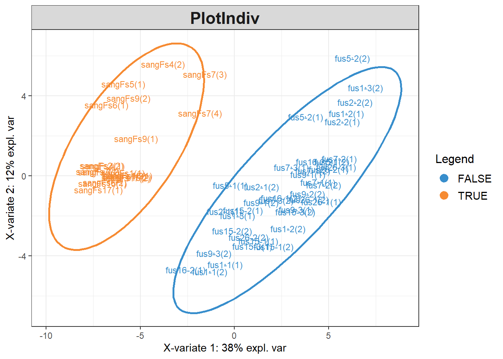
# determine the optimal number of components used in the model
spec_discr_PC.plsda.perf<-perf(species_discrimination_PC.plsda, nrepeat = 10,folds=5,
progressBar = FALSE,validation = "Mfold",
auc=TRUE, scale=FALSE)
plot(spec_discr_PC.plsda.perf, sd = TRUE, overlay = 'measure')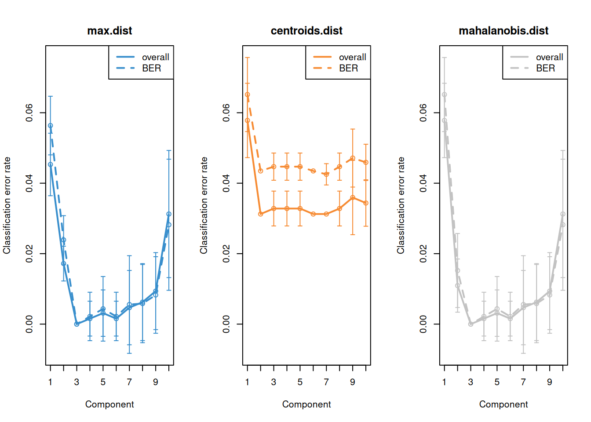
We use the performance test result to determine the optimal number of components to be used in the discriminant analysis.
selected_n <- spec_discr_PC.plsda.perf$choice.ncom["overall", "max.dist"]
# determine the number of the original variables to be kept in each component (actually
# here we have only one component)
spec_discr_PC.splsda <- tune.splsda(PCA_species_discr$x,Y,test.keepX = c(1:dim(PCA_species_discr$x)[2]),ncomp = selected_n, validation="Mfold", progressBar=FALSE, dist="max.dist",
nrepeat=5, folds=5, measure="BER", scale=FALSE)
# final model
species_prediction_model <- splsda(PCA_species_discr$x, Y, ncomp=selected_n,
keepX =spec_discr_PC.splsda$choice.keepX, scale=FALSE)
# visualize results for the first two components
plotIndiv(species_prediction_model, group=Y, legend=TRUE, ellipse=TRUE, comp=1:2)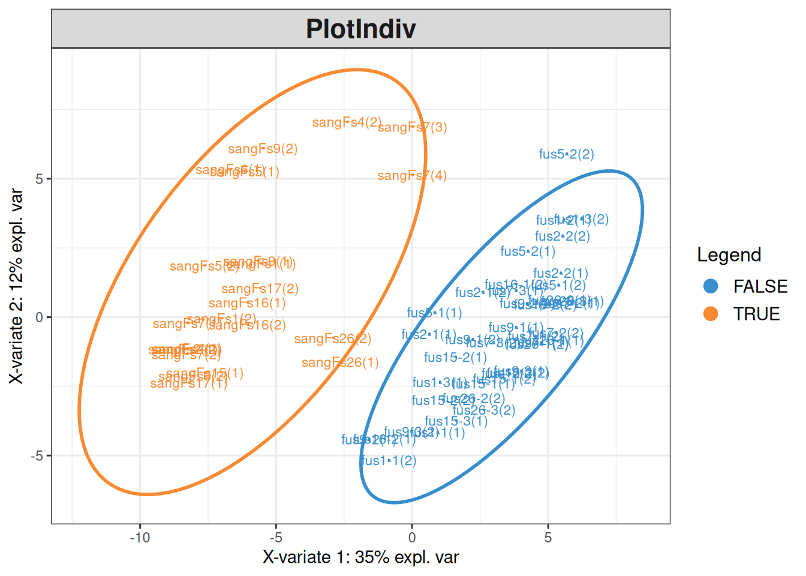
The mock profiles, with one peak augmented and all the others kept equal, are used to calculate the effect of each peak on the prediction about the species identify. The results are normalized by subtracting the score obtained from profile with no augmented peaks. In this way, peaks with negative values bias prediction towards F. fusca whereas peaks with positive values bias it towards F. sanguinea.
ones_matrix <- matrix(1, nrow = ncol(peak_prop),ncol= ncol(peak_prop))
colnames(ones_matrix) <- rownames(ones_matrix) <- colnames(peak_prop)
unit_input <- diag(rep(1, ncol(peak_prop)))
incremented_matrix <- ones_matrix + unit_input
ones_matrix <- ones_matrix[1,,drop=FALSE]
ones_matrix <- ones_matrix/ncol(ones_matrix)
incremented_matrix <- apply(incremented_matrix, 2, function(x) x/sum(x))
res1 <- calculate_SII(incremented_matrix)
res2 <- calculate_SII(ones_matrix)
res <- res1
colnames(res)[1] <- "peak_ID"
res$predicted_species = res1$predicted_species - res2$predicted_species
res <- res[order(res$predicted_species),]
peaks_fusca <- res$peak_ID[res$predicted_species<=quantile(res$predicted_species, 0.2)]
peaks_sang <- res$peak_ID[res$predicted_species>=quantile(res$predicted_species, 0.8)]
res$fusca_marker <- res$peak_ID %in% peaks_fusca
res$sanguinea_marker <- res$peak_ID %in% peaks_sang
compounds <- c()
for(peak in res$peak_ID){
compounds <- c(compounds, mass_spectra_data[mass_spectra_data$peak_ID==peak,"identification"][1])
}
res$compounds = compounds
res <- res[,c("peak_ID", "compounds", "predicted_species", "sanguinea_marker", "fusca_marker")]
rownames(res) <- NULL
print(res)## peak_ID compounds predicted_species sanguinea_marker fusca_marker
## 1 18 4-MeC24 -1.544318e-03 FALSE TRUE
## 2 16 12-; 11-; 10-; 9-; 8-MeC24 -1.528672e-03 FALSE TRUE
## 3 8 11-Me-C23 + 9-Me-C23 -1.489779e-03 FALSE TRUE
## 4 12 3-MeC23 -1.478639e-03 FALSE TRUE
## 5 15 3,13-; 3,11-; 3,9-; 3,7-diMeC23 -1.377767e-03 FALSE TRUE
## 6 14 C24 -1.303693e-03 FALSE TRUE
## 7 37 14-; 10-MeC26 + 3,7,11-triMeC25 -1.301336e-03 FALSE TRUE
## 8 65 C29ene -1.272884e-03 FALSE TRUE
## 9 7 C23 -1.230837e-03 FALSE TRUE
## 10 31 11,15-; 9,13-diMeC25 -1.187516e-03 FALSE TRUE
## 11 29 7-MeC25 -1.144720e-03 FALSE TRUE
## 12 9 7-Me-C23 -1.131340e-03 FALSE TRUE
## 13 32 7,11-diMeC25 + 3-MeC25 -1.110729e-03 FALSE TRUE
## 14 50 7-MeC27 -1.072685e-03 FALSE TRUE
## 15 17 6-MeC24 -9.773043e-04 FALSE TRUE
## 16 24 C25 -8.634097e-04 FALSE FALSE
## 17 39 5-MeC26 -8.343935e-04 FALSE FALSE
## 18 19 10,14-diMeC24 -8.157656e-04 FALSE FALSE
## 19 101 x-Me_C32 -7.819442e-04 FALSE FALSE
## 20 5 C23-ene -7.722860e-04 FALSE FALSE
## 21 38 6-MeC26 -7.573253e-04 FALSE FALSE
## 22 49 13-MeC27 -6.860802e-04 FALSE FALSE
## 23 23 4,12-diMeC24 -6.148952e-04 FALSE FALSE
## 24 35 C26 -6.103533e-04 FALSE FALSE
## 25 36 3,13-diMeC25 -5.243242e-04 FALSE FALSE
## 26 64 <NA> -4.338288e-04 FALSE FALSE
## 27 10 5-Me C23 -3.029206e-04 FALSE FALSE
## 28 109 11,21-; 11,19-diMeC33 -2.817189e-04 FALSE FALSE
## 29 51 5-MeC27 -2.772048e-04 FALSE FALSE
## 30 20 C25diene -2.678537e-04 FALSE FALSE
## 31 48 4,8,14-MeC26 -1.995710e-04 FALSE FALSE
## 32 90 C31 -1.511380e-04 FALSE FALSE
## 33 25 4,12,16-triMeC24 -1.239123e-04 FALSE FALSE
## 34 41 10,16-; 10,14-diMeC26 -2.940361e-05 FALSE FALSE
## 35 57 C28 + 3,15-diMeC27 -2.431515e-05 FALSE FALSE
## 36 69 4,8,12-triMeC28 0.000000e+00 FALSE FALSE
## 37 82 3,7-; 3,9-; 3,11-diMeC29 0.000000e+00 FALSE FALSE
## 38 108 x-Me_C32 0.000000e+00 FALSE FALSE
## 39 47 C27 8.162706e-06 FALSE FALSE
## 40 78 5,9-; 5,11-; 5,13-diMeC29 2.717495e-05 FALSE FALSE
## 41 11 9,13-diMeC23 5.159039e-05 FALSE FALSE
## 42 56 C28ene 1.937073e-04 FALSE FALSE
## 43 71 15-; 13-; 11-; 9-; 7-MeC29 2.934065e-04 FALSE FALSE
## 44 55 7,11-diMeC27 3.487956e-04 FALSE FALSE
## 45 68 C29 3.809704e-04 FALSE FALSE
## 46 94 11,19-; 11,17-; 11,15-diMeC31 4.171163e-04 FALSE FALSE
## 47 83 14-; 13-; 12-; 11-MeC30 4.326194e-04 FALSE FALSE
## 48 63 8,12,16-triMeC28 4.595382e-04 FALSE FALSE
## 49 75 11,17-diMeC29 5.011849e-04 FALSE FALSE
## 50 6 C23-ene 5.037981e-04 FALSE FALSE
## 51 45 4,12-diMeC26 5.332678e-04 FALSE FALSE
## 52 53 9,17-; 9,15-diMeC27 5.874914e-04 FALSE FALSE
## 53 59 14-; 12-; 10-MeC28 6.058682e-04 FALSE FALSE
## 54 28 9-MeC25 6.289023e-04 FALSE FALSE
## 55 40 4-MeC26 6.632755e-04 FALSE FALSE
## 56 22 C25-ene 6.890706e-04 FALSE FALSE
## 57 42 7,x-; 5,x-; 10,14-diMeC26 7.011238e-04 FALSE FALSE
## 58 54 9,13-diMeC27 7.812944e-04 FALSE FALSE
## 59 106 C33ene 8.299842e-04 FALSE FALSE
## 60 27 13-; 11-; 9-MeC25 8.580371e-04 TRUE FALSE
## 61 52 11,15-diMeC27 8.830792e-04 TRUE FALSE
## 62 92 15-; 13-; 11-; 9-MeC31 9.500477e-04 TRUE FALSE
## 63 95 13,19-;13,17-diMeC31 1.015248e-03 TRUE FALSE
## 64 21 C25-ene 1.057353e-03 TRUE FALSE
## 65 33 5,13-diMeC25 1.073363e-03 TRUE FALSE
## 66 43 C27-ene + 6,12-diMeC26 1.107450e-03 TRUE FALSE
## 67 96 <NA> 1.119509e-03 TRUE FALSE
## 68 76 13,17-diMeC29 1.195738e-03 TRUE FALSE
## 69 58 3,9-; 3,7-diMeC27 1.235856e-03 TRUE FALSE
## 70 85 (di)MeC30 (mix) 1.296032e-03 TRUE FALSE
## 71 99 (di)MeC31, mix 1.654397e-03 TRUE FALSE
## 72 30 5-MeC25 1.690041e-03 TRUE FALSE
## 73 102 13,17-DiMe_C32 + x,y-DiMe_C32 1.768648e-03 TRUE FALSE
## 74 79 C30ene 1.770196e-03 TRUE FALSEThe objects peaks_sang, peaks_fusca, species_prediction_model and PCA_species_discr are stored in the package folder and can collectively beloaded into the global environment along with the other objects by running load_globals().
globals <- readRDS(system.file("globals.rds", package="sangchem"))
globals[["species_prediction_model"]] <- species_prediction_model
globals[["PCA_species_discr"]] <- PCA_species_discr
globals[["peaks_sang"]] <- peaks_sang
globals[["peaks_fusca"]] <- peaks_fusca
saveRDS(globals, system.file("globals.rds", package="sangchem"))1.2 Species identity score
Ants in the mixed colonies exchanged their CHCs to produce hybrid chemical identity. We developed the method to assign each sample a number indicating how much the sample characteristic of one or the other species.
The main idea is to fit a sPLS_DA model to the training set (sampled from the field colonies) and use it predict the explanatory variable (species) in the test data (samples from the experimental colonies). However, the sPLS_DA model run on the raw data might yield the classifier using only few variables (peaks) which might be enough to separate samples based on the species identity. But unused variables might also be informative in the species discrimination task. Since we want to use as much data as it is possible to make predictions robust, we will preprocess data using principal component analysis. Thus, the rotation matrix from the principal component analysis will be used to transform input data to the discrimination model. The corresponding code in encapsulated in the claculate_SII function.
1.2.1 Data preparation
data("development_data")
dev_samples <- filter(development_data, caste=="worker",!is.na(head_width), !remarks %in% c("aggression actor", "aggression target", "queenless colony")) %>%
dplyr::select(chromatogram_ID, species, colony, sang_prop, callow, census_date)
normalized_abundances <- peak_proportions_table(mass_spectra_data[mass_spectra_data$chromatogram_ID %in% dev_samples$chromatogram_ID,])
species_indices <- calculate_SII(normalized_abundances)
dev_samples <- left_join(dev_samples, species_indices)## Joining with `by = join_by(chromatogram_ID)`1.2.2 Predicted species of different categories of ants as a function of the proportion of F. sanguinea ants in a colony
1.2.2.1 Mature F. sanguinea
library(lmerTest)
library(DHARMa)
model_input <- dev_samples[dev_samples$species=="F. sanguinea"&dev_samples$callow==0,]
lm_model <- lmer(predicted_species~sang_prop+(1|colony)+(1|colony:census_date), data=model_input)## boundary (singular) fit: see help('isSingular')## Linear mixed model fit by REML. t-tests use Satterthwaite's method ['lmerModLmerTest']
## Formula: predicted_species ~ sang_prop + (1 | colony) + (1 | colony:census_date)
## Data: model_input
##
## REML criterion at convergence: -43.5
##
## Scaled residuals:
## Min 1Q Median 3Q Max
## -2.23995 -0.57602 0.00341 0.58509 1.45835
##
## Random effects:
## Groups Name Variance Std.Dev.
## colony:census_date (Intercept) 0.01188 0.1090
## colony (Intercept) 0.00000 0.0000
## Residual 0.01779 0.1334
## Number of obs: 68, groups: colony:census_date, 44; colony, 16
##
## Fixed effects:
## Estimate Std. Error df t value Pr(>|t|)
## (Intercept) 0.24920 0.04140 41.59529 6.019 3.86e-07 ***
## sang_prop 0.76846 0.08027 40.73979 9.573 5.55e-12 ***
## ---
## Signif. codes: 0 '***' 0.001 '**' 0.01 '*' 0.05 '.' 0.1 ' ' 1
##
## Correlation of Fixed Effects:
## (Intr)
## sang_prop -0.825
## optimizer (nloptwrap) convergence code: 0 (OK)
## boundary (singular) fit: see help('isSingular')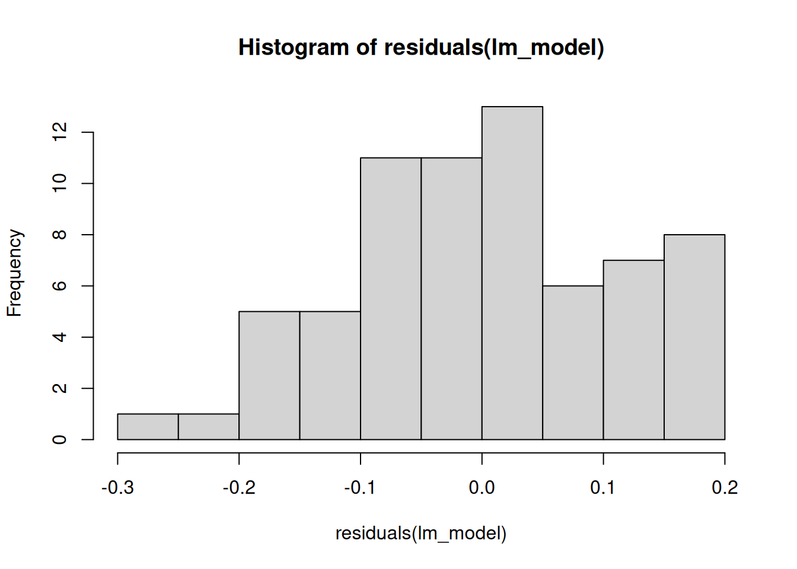
##
## Shapiro-Wilk normality test
##
## data: residuals(lm_model)
## W = 0.98104, p-value = 0.3879simulationOutput <- simulateResiduals(fittedModel = lm_model, plot = FALSE, n=1e4)
plot(simulationOutput)## Warning in newton(lsp = lsp, X = G$X, y = G$y, Eb = G$Eb, UrS = G$UrS, L = G$L, : Fitting terminated with step failure - check
## results carefully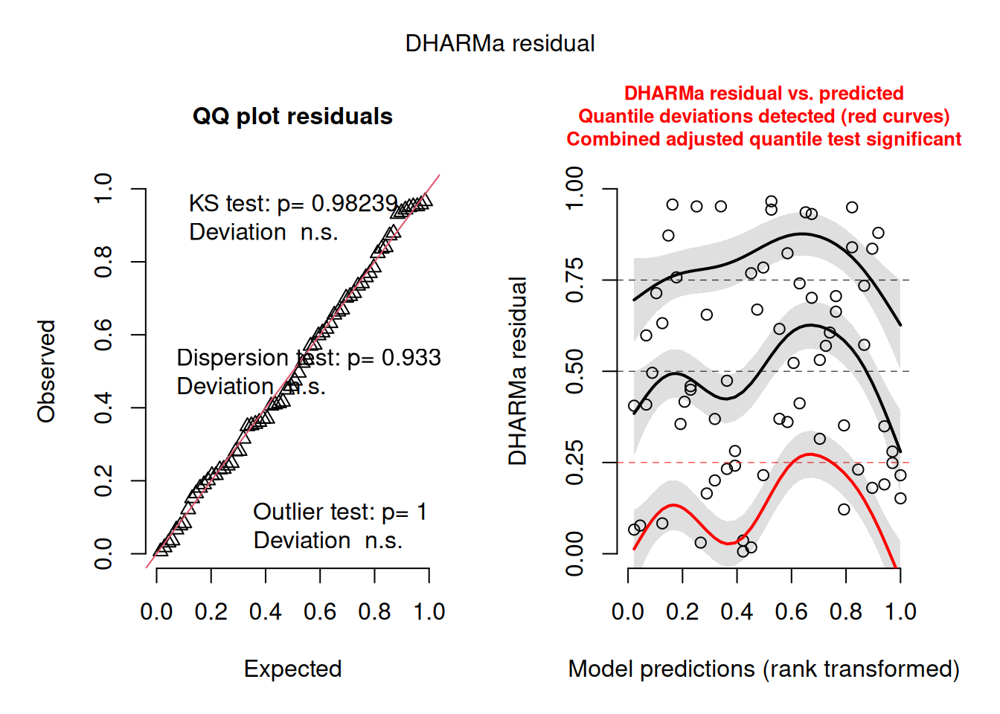
1.2.2.2 F. fusca
model_input <- dev_samples[dev_samples$species=="F. fusca",]
lm_model <- lmer(sqrt(predicted_species)~sang_prop+(1|colony)+(1|colony:census_date), data=model_input)## Warning in sqrt(predicted_species): NaNs produced
## Warning in sqrt(predicted_species): NaNs produced
## Warning in sqrt(predicted_species): NaNs produced
## Warning in sqrt(predicted_species): NaNs produced
## Warning in sqrt(predicted_species): NaNs produced
## Warning in sqrt(predicted_species): NaNs produced## Linear mixed model fit by REML. t-tests use Satterthwaite's method ['lmerModLmerTest']
## Formula: sqrt(predicted_species) ~ sang_prop + (1 | colony) + (1 | colony:census_date)
## Data: model_input
##
## REML criterion at convergence: -64
##
## Scaled residuals:
## Min 1Q Median 3Q Max
## -2.73256 -0.47288 -0.08281 0.69672 2.66976
##
## Random effects:
## Groups Name Variance Std.Dev.
## colony:census_date (Intercept) 0.0007681 0.02772
## colony (Intercept) 0.0015551 0.03943
## Residual 0.0200411 0.14157
## Number of obs: 74, groups: colony:census_date, 53; colony, 20
##
## Fixed effects:
## Estimate Std. Error df t value Pr(>|t|)
## (Intercept) 0.40190 0.02717 40.23597 14.794 < 2e-16 ***
## sang_prop 0.45288 0.05939 31.41177 7.626 1.23e-08 ***
## ---
## Signif. codes: 0 '***' 0.001 '**' 0.01 '*' 0.05 '.' 0.1 ' ' 1
##
## Correlation of Fixed Effects:
## (Intr)
## sang_prop -0.700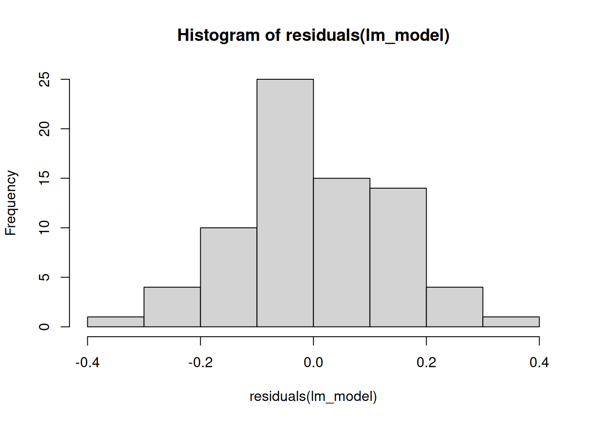
##
## Shapiro-Wilk normality test
##
## data: residuals(lm_model)
## W = 0.99056, p-value = 0.8614simulationOutput <- simulateResiduals(fittedModel = lm_model, plot = FALSE, n=1e4)
plot(simulationOutput)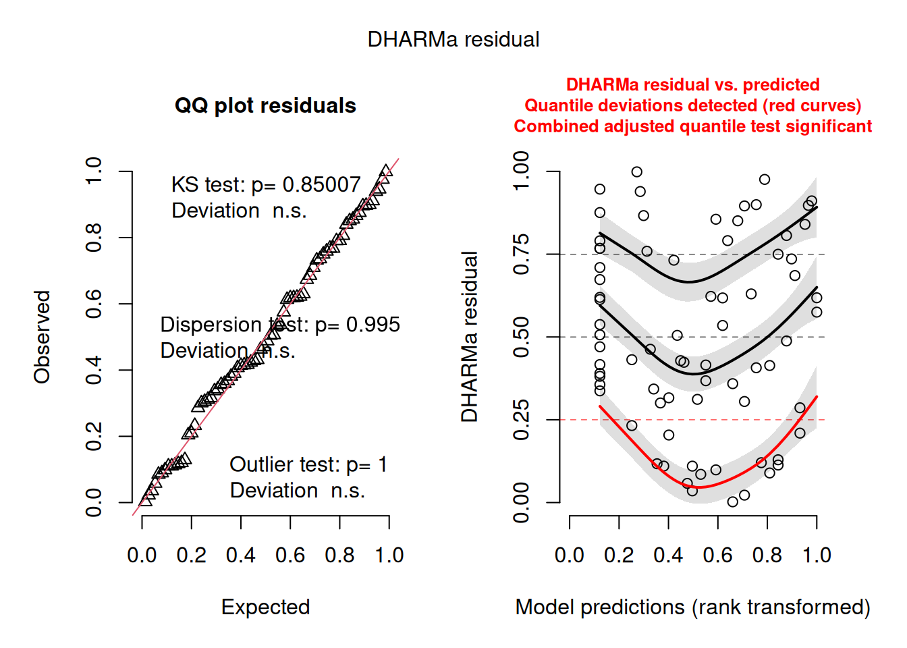
1.2.2.3 Callow F. sanguinea
model_input <- dev_samples[dev_samples$species=="F. sanguinea"&dev_samples$callow==1,]
lm_model <- lmer(predicted_species~sang_prop+(1|colony), data=model_input)
print(summary(lm_model))## Linear mixed model fit by REML. t-tests use Satterthwaite's method ['lmerModLmerTest']
## Formula: predicted_species ~ sang_prop + (1 | colony)
## Data: model_input
##
## REML criterion at convergence: -14.2
##
## Scaled residuals:
## Min 1Q Median 3Q Max
## -1.6638 -0.5734 -0.2281 0.5547 2.6852
##
## Random effects:
## Groups Name Variance Std.Dev.
## colony (Intercept) 0.002365 0.04863
## Residual 0.029212 0.17091
## Number of obs: 32, groups: colony, 16
##
## Fixed effects:
## Estimate Std. Error df t value Pr(>|t|)
## (Intercept) 0.09050 0.05635 29.00626 1.606 0.119
## sang_prop 0.71448 0.10427 29.40302 6.852 1.47e-07 ***
## ---
## Signif. codes: 0 '***' 0.001 '**' 0.01 '*' 0.05 '.' 0.1 ' ' 1
##
## Correlation of Fixed Effects:
## (Intr)
## sang_prop -0.811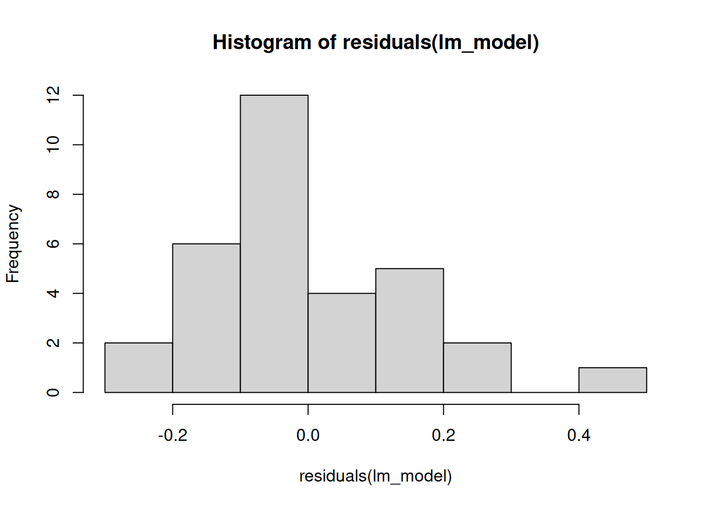
##
## Shapiro-Wilk normality test
##
## data: residuals(lm_model)
## W = 0.94495, p-value = 0.1036simulationOutput <- simulateResiduals(fittedModel = lm_model, plot = FALSE, n=1e4)
plot(simulationOutput)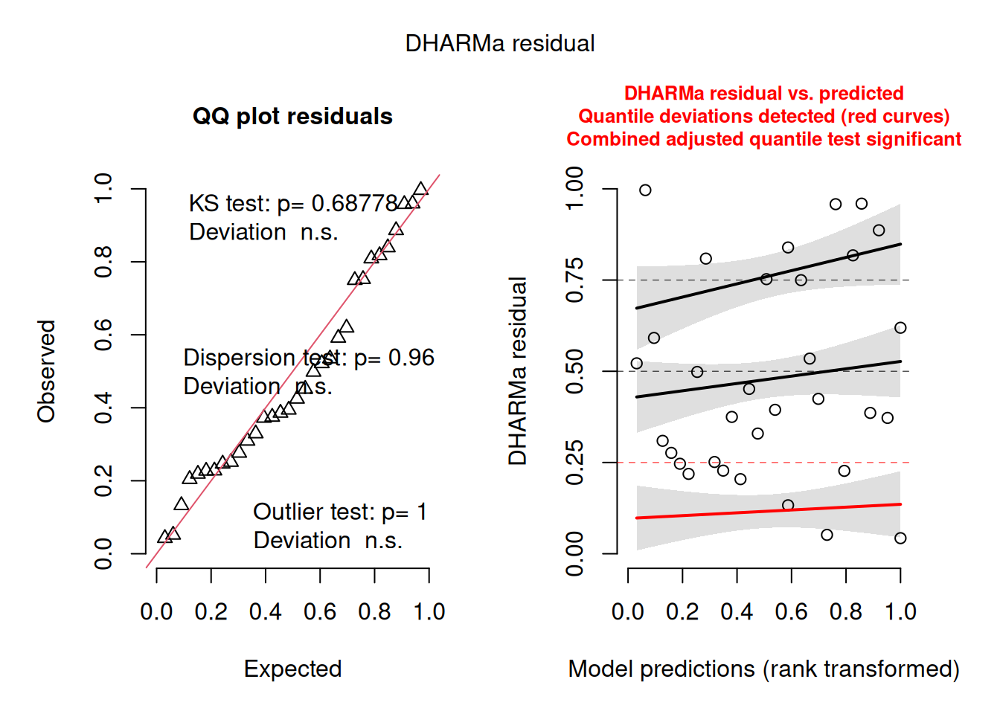
1.2.3 Difference in species prediction between mature F. sanguinea ants and their slaves
model_input <- dev_samples[dev_samples$species=="F. sanguinea"&dev_samples$callow==0,]
model_input$index_diff <- model_input$predicted_species - find_nestmates_SII(model_input$chromatogram_ID, dev_samples)
lm_model <- lmer(index_diff~sang_prop+(1|colony)+(1|colony:census_date), data=model_input)## boundary (singular) fit: see help('isSingular')## Linear mixed model fit by REML. t-tests use Satterthwaite's method ['lmerModLmerTest']
## Formula: index_diff ~ sang_prop + (1 | colony) + (1 | colony:census_date)
## Data: model_input
##
## REML criterion at convergence: -15.4
##
## Scaled residuals:
## Min 1Q Median 3Q Max
## -1.97324 -0.45619 0.04801 0.52594 1.73595
##
## Random effects:
## Groups Name Variance Std.Dev.
## colony:census_date (Intercept) 0.03514 0.1875
## colony (Intercept) 0.00000 0.0000
## Residual 0.01769 0.1330
## Number of obs: 65, groups: colony:census_date, 41; colony, 16
##
## Fixed effects:
## Estimate Std. Error df t value Pr(>|t|)
## (Intercept) 0.196630 0.060609 38.304713 3.244 0.00245 **
## sang_prop 0.001746 0.124247 36.789128 0.014 0.98886
## ---
## Signif. codes: 0 '***' 0.001 '**' 0.01 '*' 0.05 '.' 0.1 ' ' 1
##
## Correlation of Fixed Effects:
## (Intr)
## sang_prop -0.828
## optimizer (nloptwrap) convergence code: 0 (OK)
## boundary (singular) fit: see help('isSingular')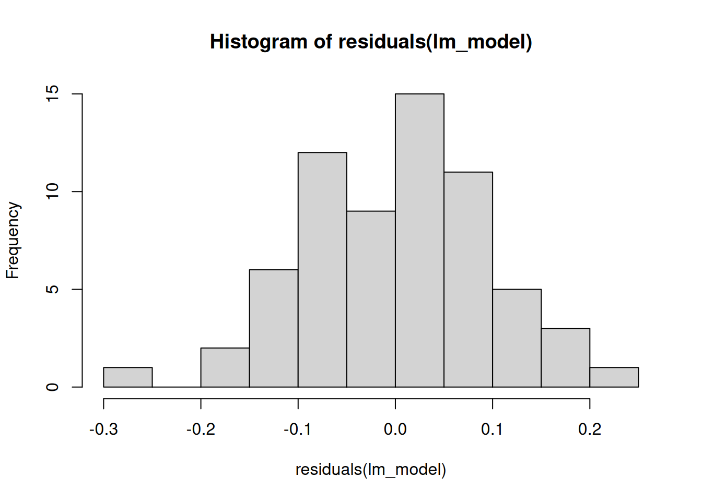
##
## Shapiro-Wilk normality test
##
## data: residuals(lm_model)
## W = 0.99333, p-value = 0.9801simulationOutput <- simulateResiduals(fittedModel = lm_model, plot = FALSE, n=1e4)
plot(simulationOutput)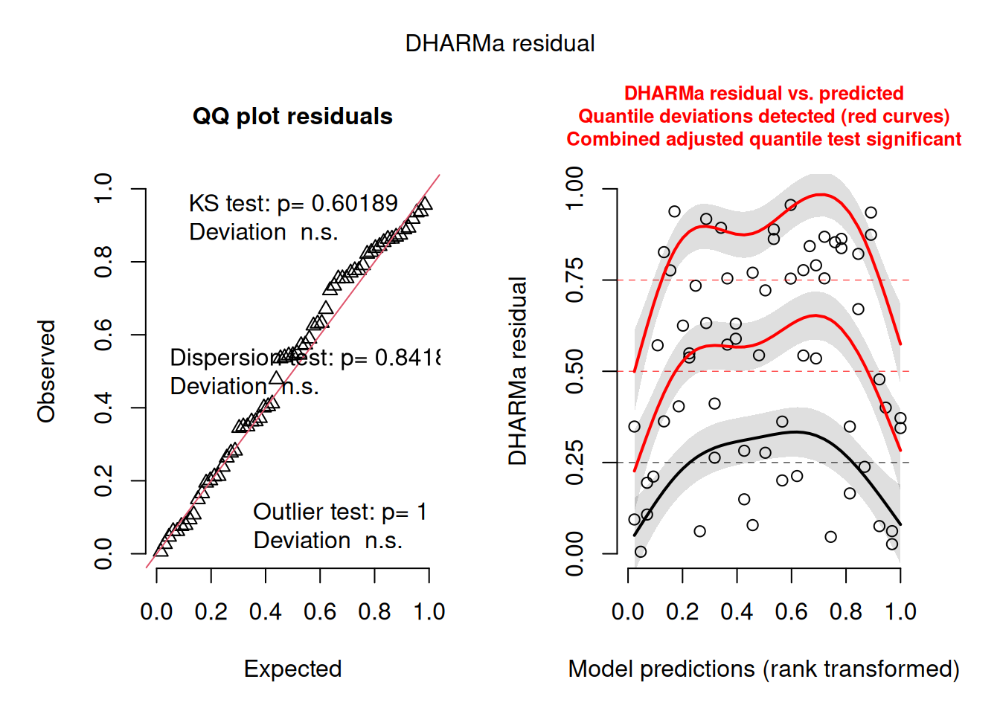
1.2.4 Difference in species prediction between callow F. sanguinea ants and their slaves
Since the linear model does not meet one of diagnostics criterion we will apply Wilcoxon paired test.
library(ggpubr)
library(rstatix)
model_input <- dev_samples[dev_samples$species=="F. sanguinea"&dev_samples$callow==1,]
model_input$index_diff <- model_input$predicted_species - find_nestmates_SII(model_input$chromatogram_ID, dev_samples, heterospecific = TRUE)
# no random effect since it captures no variance
lm_model <- lm(index_diff~sang_prop, data=model_input)
print(summary(lm_model))##
## Call:
## lm(formula = index_diff ~ sang_prop, data = model_input)
##
## Residuals:
## Min 1Q Median 3Q Max
## -0.25721 -0.09571 -0.04548 0.07264 0.51010
##
## Coefficients:
## Estimate Std. Error t value Pr(>|t|)
## (Intercept) -0.01165 0.05770 -0.202 0.841
## sang_prop 0.03671 0.11898 0.309 0.760
##
## Residual standard error: 0.176 on 28 degrees of freedom
## (2 observations deleted due to missingness)
## Multiple R-squared: 0.003388, Adjusted R-squared: -0.0322
## F-statistic: 0.0952 on 1 and 28 DF, p-value: 0.76
##
## Shapiro-Wilk normality test
##
## data: residuals(lm_model)
## W = 0.90995, p-value = 0.01484model_input <- dev_samples[dev_samples$species=="F. sanguinea"&dev_samples$callow==1,]
model_input$slave_species_index <- find_nestmates_SII(model_input$chromatogram_ID, dev_samples)
print(wilcox.test(model_input$predicted_species, model_input$slave_species_index, paired=TRUE))##
## Wilcoxon signed rank exact test
##
## data: model_input$predicted_species and model_input$slave_species_index
## V = 202, p-value = 0.5425
## alternative hypothesis: true location shift is not equal to 0df <- data.frame(species_identity_index=c(model_input$predicted_species, model_input$slave_species_index), species="F. fusca")
df$species[1:nrow(model_input)] <- "callow F. sanguinea"
stat_tests <- wilcox_test(df, species_identity_index~species, paired=TRUE) %>%
add_significance("p") %>%
add_xy_position(x="species", dodge=0.8, fun="max")
ggboxplot(df, x="species", y="species_identity_index")+
scale_y_continuous(expand = expansion(mult=c(0.02,0.1)))+
stat_pvalue_manual(stat_tests, label="p", tip.length = 0, size=3.5)## Warning: Removed 2 rows containing non-finite outside the scale range (`stat_boxplot()`).
1.2.5 Difference in species prediction between callow and mature F. sanguinea ants.
model_input <- dev_samples[dev_samples$species=="F. sanguinea"&dev_samples$callow==1,]
model_input$index_diff <- model_input$predicted_species - find_nestmates_SII(model_input$chromatogram_ID, dev_samples, heterospecific = FALSE)
# no random effect since it captures no variance
lm_model <- lm(index_diff~sang_prop, data=model_input)
print(summary(lm_model))##
## Call:
## lm(formula = index_diff ~ sang_prop, data = model_input)
##
## Residuals:
## Min 1Q Median 3Q Max
## -0.25050 -0.08940 -0.02247 0.10923 0.35805
##
## Coefficients:
## Estimate Std. Error t value Pr(>|t|)
## (Intercept) -0.23288 0.05417 -4.299 0.000188 ***
## sang_prop 0.08269 0.09911 0.834 0.411148
## ---
## Signif. codes: 0 '***' 0.001 '**' 0.01 '*' 0.05 '.' 0.1 ' ' 1
##
## Residual standard error: 0.1618 on 28 degrees of freedom
## (2 observations deleted due to missingness)
## Multiple R-squared: 0.02426, Adjusted R-squared: -0.01059
## F-statistic: 0.6961 on 1 and 28 DF, p-value: 0.4111
##
## Shapiro-Wilk normality test
##
## data: residuals(lm_model)
## W = 0.95511, p-value = 0.2311model_input <- dev_samples[dev_samples$species=="F. sanguinea"&dev_samples$callow==1,]
model_input$mature_ant_index <- find_nestmates_SII(model_input$chromatogram_ID, dev_samples, heterospecific = FALSE)
print(wilcox.test(model_input$predicted_species, model_input$mature_ant_index, paired=TRUE))##
## Wilcoxon signed rank exact test
##
## data: model_input$predicted_species and model_input$mature_ant_index
## V = 24, p-value = 1.419e-06
## alternative hypothesis: true location shift is not equal to 0df <- data.frame(species_identity_index=c(model_input$predicted_species, model_input$mature_ant_index), age="mature")
df$age[1:nrow(model_input)] <- "callow"
stat_tests <- wilcox_test(df, species_identity_index~age, paired=TRUE) %>%
add_significance("p") %>%
add_xy_position(x="age", dodge=0.8, fun="max")
ggboxplot(df, x="age", y="species_identity_index")+
scale_y_continuous(expand = expansion(mult=c(0.02,0.1)))+
stat_pvalue_manual(stat_tests, label="p", tip.length = 0, size=3.5)## Warning: Removed 2 rows containing non-finite outside the scale range (`stat_boxplot()`).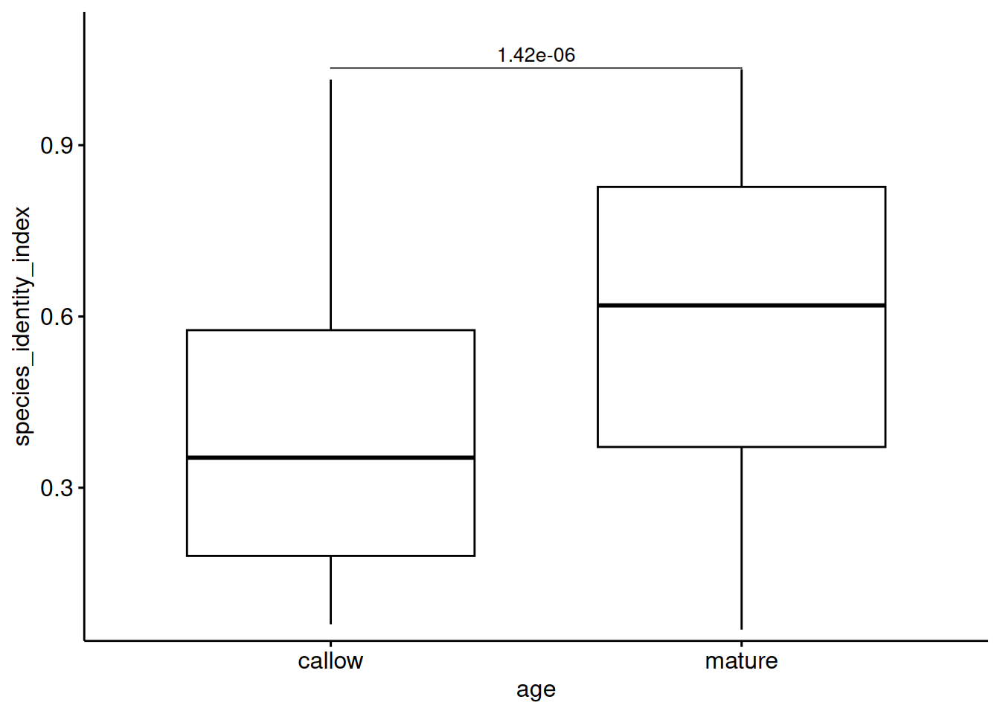